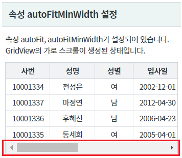
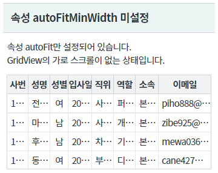
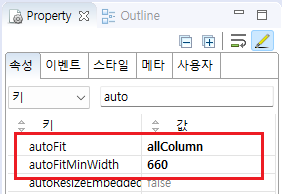
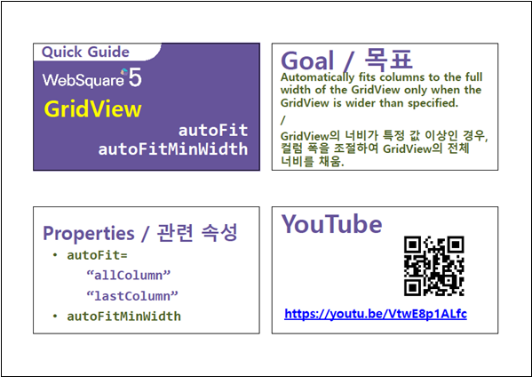

GridView의 속성 autoFitMinWidth의 설정 값 비교 예제입니다. 속성 autoFitMinWidth은 GridView의 너비가 속성 autoFitMinWidth의 설정 값 이하가 되면 autoFit 기능을 해제하여 가로 스크롤을 생성해주는 기능입니다. 이 기능은 GridView의 너비가 가변형으로 구성된 경우 유용합니다.
속성 autoFit의 설정 값이 allColumn으로 지정되어야 동작합니다.
속성 autoFitMinWidth 설정
속성 autoFitMinWidth 미설정
영역 [속성 autoFitMinWidth 설정]에 있는 GridView를 확인합니다.
GridView에 가로 스크롤이 생성되어 있습니다.
[브라우저(Chrome) 실행 예시]

영역 [속성 autoFitMinWidth 미설정]에 있는 GridView를 확인합니다.
GridView에 가로 스크롤이 없이 컬럼의 폭이 GridView의 너비에 맞춰 자동 조절되어 있습니다.
[브라우저(Chrome) 실행 예시]

STEP1. GridView의 속성을 정의합니다.
[필수] autoFit="allColumn" // 폭 자동 조절
[필수] autoFitMinWidth="너비 값" //GridView의 최소 너비. (단위: px)
예시) autoFitMinWidth="660" //660px 이하일 때 autoFit 기능 사용 안함
그림 1.웹스퀘어5 SP5 스튜디오의 Property View(속성창) 예시

[소스 코드 예시]
<!-- gridView 의 소스 본문 예시 --> <w2:gridView autoFitMinWidth="660" autoFit="allColumn" dataList="data:dlt_member" style="height: 90px;"> <!-- 중략 --> </w2:gridView>
autoFit
autoFitMinWidth
[웹스퀘어5 SP5 개발 가이드] GridView
링크 : https://docs1.inswave.com/sp5_user_guide/bc10c1b82c9a2a0b#e1c4658baf7e726f
[웹스퀘어5 SP5 개발 가이드] GridView 자동 맞춤 (autoFit)
링크 : https://docs1.inswave.com/sp5_user_guide/86bdcf48029b958b#9af6d3859befb6c8
[웹스퀘어5 SP5 개발 가이드] GridView autoFit & autoFitMinWidth
링크 : https://docs1.inswave.com/sp5_user_guide/86bdcf48029b958b#8dc12aba0a7d439d
GridView autoFit & autoFitMinWidth
링크 : https://youtu.be/VtwE8p1ALfc
